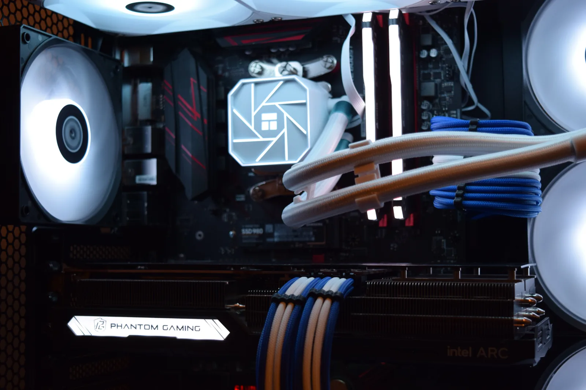

FEATURED / 001
Custom PC build
A desktop PC documented with hardware photography, from the full build to the details inside.
- Graphics
- Intel Arc A770
- Processor
- AMD Ryzen 7 5700X3D
- Memory
- 32 GB RAM
- Storage
- Samsung 980 NVMe · 500 GB